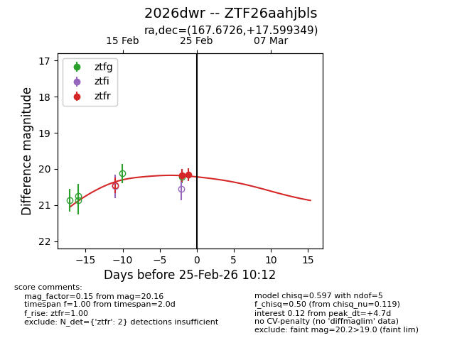
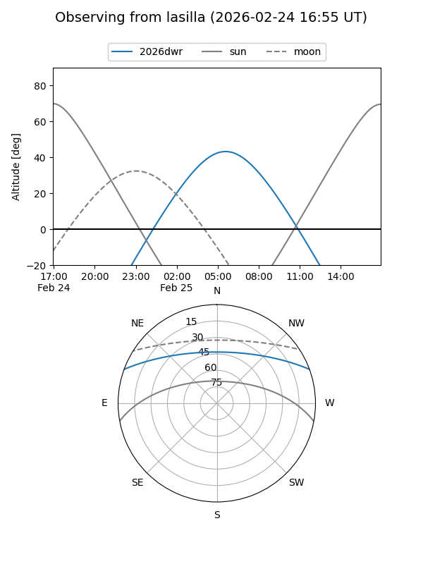
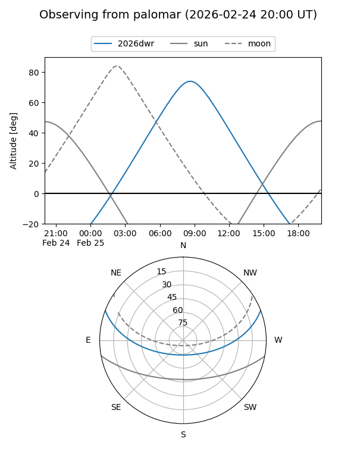
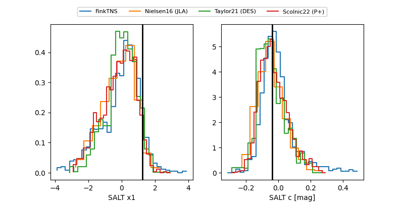

2026dwr
Target 2026dwr at 2026-02-25 10:13
Aliases and brokers:
FINK: link
Lasair: link
ALeRCE: link
TNS: link
YSE: link
alt names
ZTF26aahjbls (ztf,fink_ztf)
2026dwr (tns,yse)
Coordinates:
equatorial (ra, dec) = 167.6726,+17.59935
equatorial (HMS+DMS) = 11:10:41.43,+17:35:57.66
galactic (l, b) = (229.9579,+64.89705)
Flags:
Photometry:
last ztfr=20.16
2 ztfr detections
Lightcurve

Visibility


Additional plots
